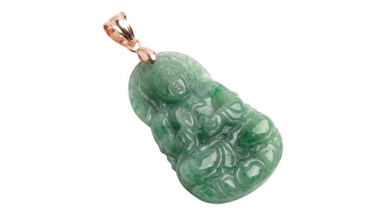
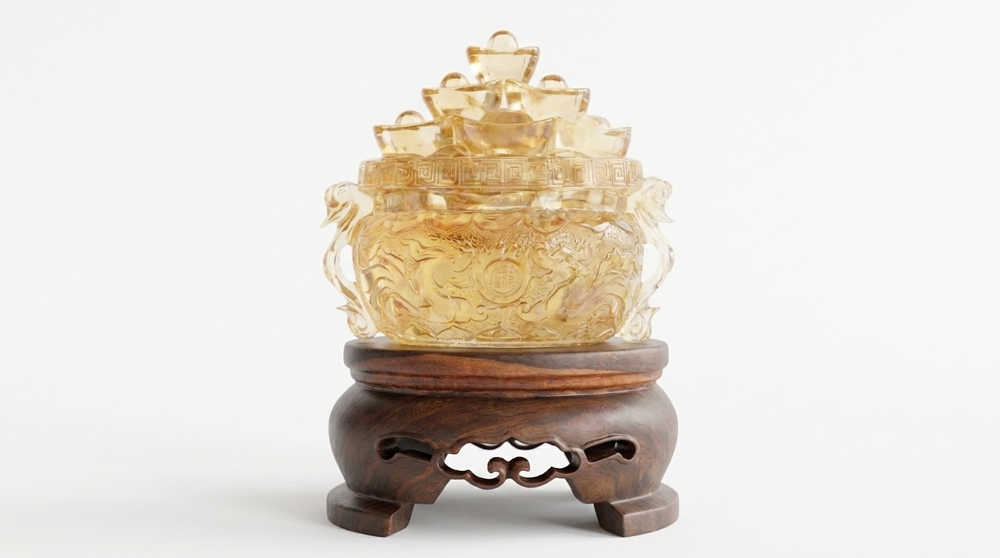
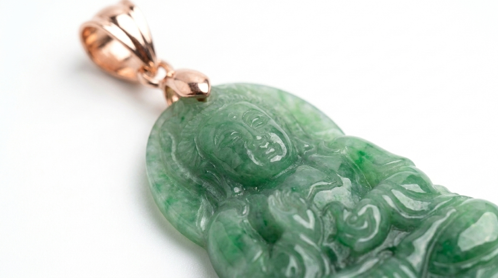
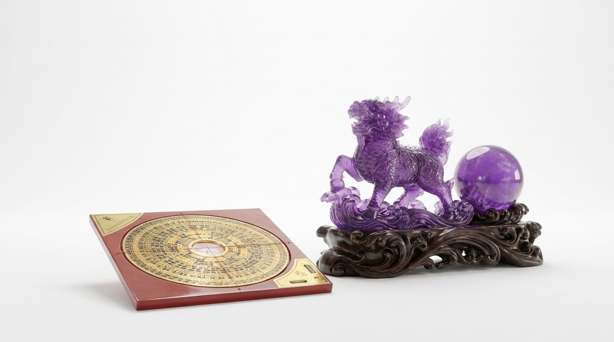

▽
Seni Kurasi Kristal
Setiap kristal imperial fengshui yang kami hadirkan lahir dari tangan-tangan terampil yang memahami karakter batu sejak dari bentuk mentahnya. Keahlian ini adalah warisan yang tak tergantikan oleh mesin apa pun.
Mereka adalah penjaga tradisi. Dari generasi ke generasi, keahlian ini terus hidup dalam setiap kristal yang dikurasi oleh Anggara Treasures — memadukan presisi teknis dengan kepekaan spiritual.

▸ Standar Kejernihan
Setiap kristal dinilai dari tingkat kejernihannya — inklusi dan noda internal menjadi penentu. Hanya batu dengan kejernihan dan warna alami tertinggi yang melanjutkan perjalanan menuju tangan para pengukir kami.
Selengkapnya
▸ Warisan Turun-Temurun
Setiap potongan diukir langsung oleh tangan maestro pengrajin dengan teknik turun-temurun, hasil dari pelatihan bertahun-tahun. Presisi inilah yang memaksimalkan pantulan cahaya dan energi di dalam setiap kristal.
Selengkapnya
▸ Keseimbangan Energi
Tim kurator kami memahami prinsip fengshui secara mendalam, memastikan setiap kristal yang sampai ke tangan Anda membawa keseimbangan energi yang sesuai dengan kebutuhan dan tujuan Anda.
Selengkapnya▽
Koleksi Anggara Treasures
Merayakan teknik dekoratif yang diterapkan pada setiap kristal, koleksi Anggara Treasures menemukan inspirasinya dari seni, sejarah, dan budaya istana Dinasti Qing. Disempurnakan oleh tangan maestro kami, setiap karya adalah bukti kreativitas dan keahlian yang diwariskan lintas generasi.
Jelajahi Koleksi

Selanjutnya